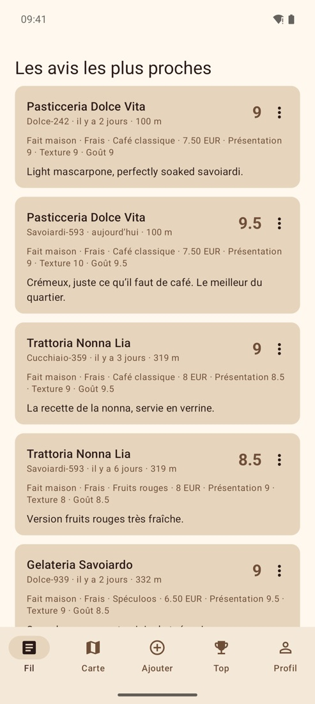
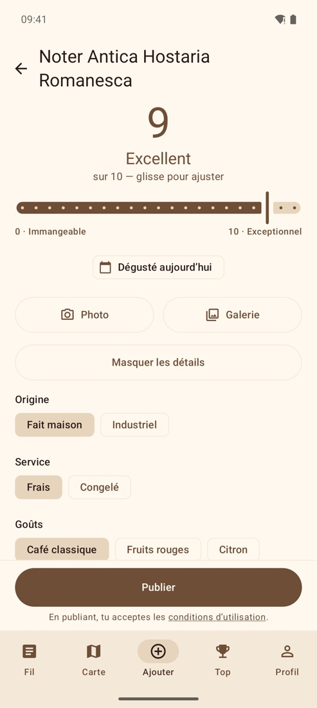
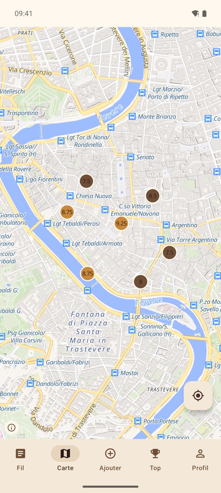
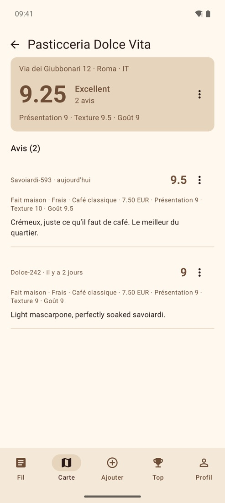
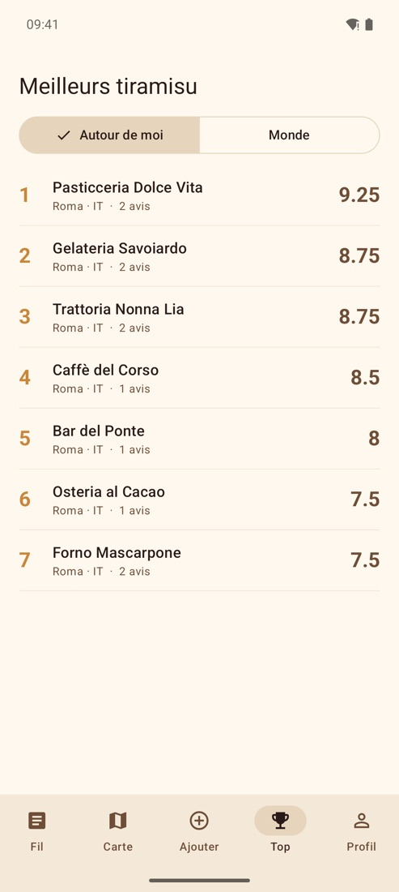

Tiramisu Review
Note les tiramisus que tu manges, partout dans le monde, et découvre les meilleurs autour de toi.





Une note sur 10
Un curseur, une photo, c’est publié. Les détails sont en option : fait maison ou industriel, frais ou congelé, goûts, prix, commentaire.
Les avis les plus proches
Le fil montre d’abord les tiramisus notés près de toi, puis de plus en plus loin.
Carte et classement
Repère les bonnes adresses sur la carte et compare les meilleurs tiramisus autour de toi ou dans le monde.
Partout dans le monde
Des millions de restaurants, cafés et pâtisseries déjà référencés. Un lieu manque ? Ajoute-le en deux gestes.
Sans compte
Pas d’e-mail, pas de mot de passe : un pseudonyme anonyme est créé pour toi. Tu peux tout supprimer à tout moment.
Une communauté respectueuse
Chaque avis peut être signalé, chaque utilisateur bloqué. Les signalements sont traités sous 24 heures.
Une question, une idée, un restaurant à signaler ? Écris-nous à info@agama.ch ou consulte la page Aide.